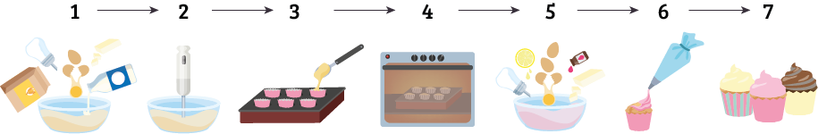
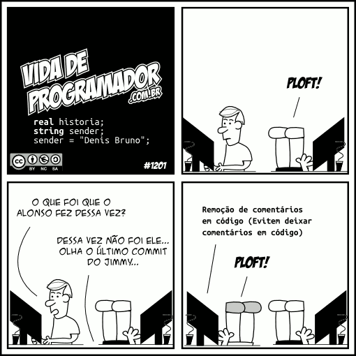
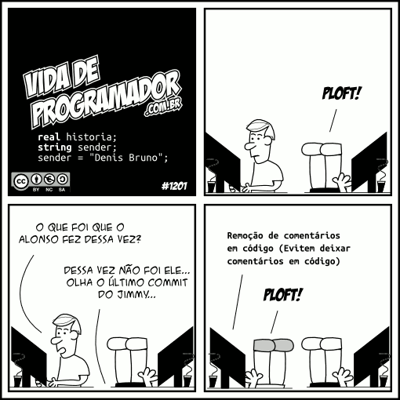

Computador
Máquina eficaz que processa informações automaticamente conforme pré-definidas.

Algoritmo
É um conjunto de instruções, como uma receita de bolo, constituído de um número finito de passos.
Linguagem de programação
Para que os dados sejam processados, há uma necessidade de utilizar uma linguagem de programação, pois os computadores não executam diretamente os algoritmos. Eles precisam ser transformados para uma linguagem de programação que será traduzida para uma linguagem de máquina.

Bit
| Decimal | Binário |
| 0 | 0000 |
| 1 | 0001 |
| 2 | 0010 |
| 3 | 0011 |
| 4 | 0100 |
| 5 | 0101 |
| 6 | 0110 |
| 7 | 0111 |
| 8 | 1000 |
| 9 | 1001 |
| 10 | 1010 |
| 11 | 1011 |
| 12 | 1100 |
| 13 | 1101 |
| 14 | 1110 |
| 15 | 1111 |
Byte
Conjunto de 8 bits. Memórias são medidas em bytes. Cada caractere é um byte.
| Medida | Símbolo | Caracteres | Espaço |
| Byte | - | 1 | 8 bits |
| Kilobyte | kb | 1024 | 1024 bytes |
| Megabyte | mb | 1048576 | 1024 kb |
| Gigabyte | gb | 1073741824 | 1024 mb |
| Terabyte | tb | 1099511627776 | 1024 gb |
| Pentabyte | pb | 1125899906842624 | 1024 tb |
Hardware
Parte física do computador.

Software
Programas de computador.

Compilador
Programas que transformam linguagens de programação para linguagem de máquina (o que nós vemos).

Pseudolinguagem
Comandos em português.
início
inteiro a, b, c, d, i, x
leia (a, b, c, d)
para i de 1 até 5 faça
se (a + b) > (c + d)
x ← x + 1
se não x ← x + 2
a ← a + 2
c ← c + 1
fim para
escreva (x)
fim
Variáveis
Nos algoritmos cada variável corresponde a uma posição na memória cujo comando pode variar ao longo do tempo durante a execução de um programa. Embora uma variável possa assumir diferentes valores, ela só pode armazenar um único valor a cada instante. Toda variável é identificada por um nome ou identificador.
- Inteiro: 1, 2, 3, 0, -3, -2, -1
- Real: 1.1, 1.9, 0.8, -8.9
- Caracter: “a”, “BC”, “x9” (só pode começar com letra, ou seja não pode ser “9x”)
- Lógico: F e V.
Constantes
Numérica, lógica ou caractere.
Comentário
Comentários feitos dentro de códigos.
 

Comando de atribuição
identificador ← expressão- Identificador: Nome da variável
- Expressão: Pode ser uma expressão aritmética, lógica ou do tipo caractere, ou números.
Exemplo:
Nota ← 7.5
x ← 2
b ← x+1
nome ← “ead”
Expressões Aritméticas e Operadores
As expressões aritméticas são formadas por variáveis, constantes e operadores aritméticos.
A ← B + 2 * C + ABS(B)Onde:
- A, B e C: variáveis
- 2: constante
- ABS(): função
- +: adição
- *: multiplicação
Operadores Lógicos
| Conjunção (E) | ||
|---|---|---|
| V | V | V |
| V | F | F |
| F | V | F |
| F | F | F |
| Disjunção (OU) | ||
|---|---|---|
| V | V | V |
| V | F | V |
| F | V | V |
| F | F | F |
| Negação (NÃO) | |
|---|---|
| não V | F |
| não F | V |
Operadores Relacionais
| Operador | Descrição |
| == | Igualdade |
| > | Maior |
| < | Menor |
| <= | Menor igual |
| >= | Maior igual |
| != | Diferente |
Entrada e Saída
Entrada de dados (leia)
Exemplo: leia(nota)
O algoritmo espera que se digite uma nota. Assim que for digitada, ela será armazenada na variável cujo o identificador é "nota".
Saída de dados (escreva)
Exemplo: escreva(media) ou escreva("A média é: ", media)
No exemplo, o valor armazenado na variável "media" será mostrado.